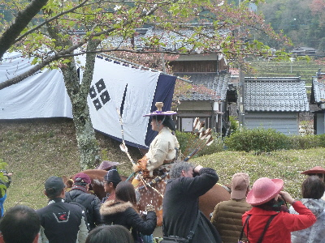
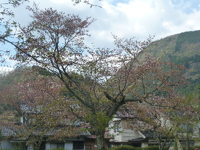
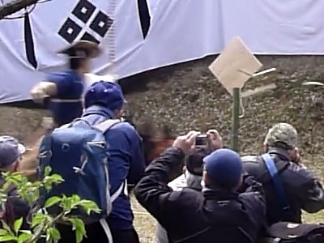
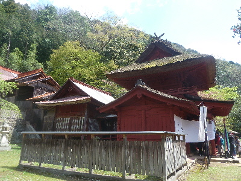

鷲原八幡宮で流鏑馬を見ました。
2018/04/08
初めて流鏑馬を見ました。

最初にパレードみたいなのがありました。
神事なので、いろいろ決まり事があるようです。
会場はでは今何を行っているか、放送で随時案内があったので「ほー。そうゆう事をやっているのか。」と確認しながら見れました。
案内が堅苦しくなかったのでわかりやすかったです。

いつもだと桜の季節ですが、今年は開花が早かったのですっかり散っていました。
桜あったらもっと見栄えが良かったんだろうな。

ヤブサメで矢が的に当たったところです。
私のカメラはこれが限界かな。動きが早いのでブレてます。
前で写真撮ってる人は綺麗に撮れてるんだろうなー。
流鏑馬の的と射手の距離はそんなにないですが、スピードが速いのでなかなか当たらないようでした。
何人やったか覚えていないですが、人数が多かったので退屈しないで見れました。
次は当たるか外れるかっ！って見るのが面白かったです。

最後に鷲原八幡宮に参拝して帰りました。
立派な建物ですね。